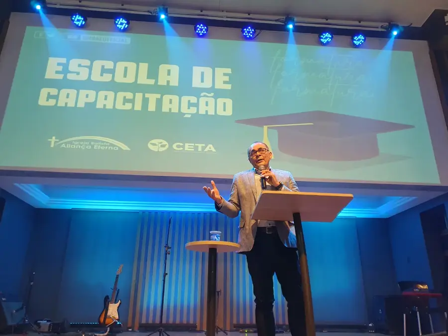
ESC
Escola de Capacitação
Para quem está disposto a aprender mais sobre Deus e sobre a nossa igreja. As turmas se formam em cerimônias de formatura.
Perguntar sobre as turmas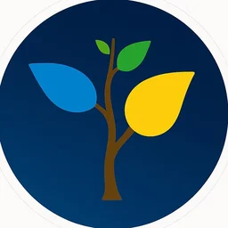
CETACentro de Treinamento AliançaMinistério de Ensino · Igreja Batista Aliança Eterna · Belo Horizonte
O CETA é o lugar onde homens e mulheres que decidiram investir no próprio desenvolvimento ministerial são treinados, capacitados e enviados.
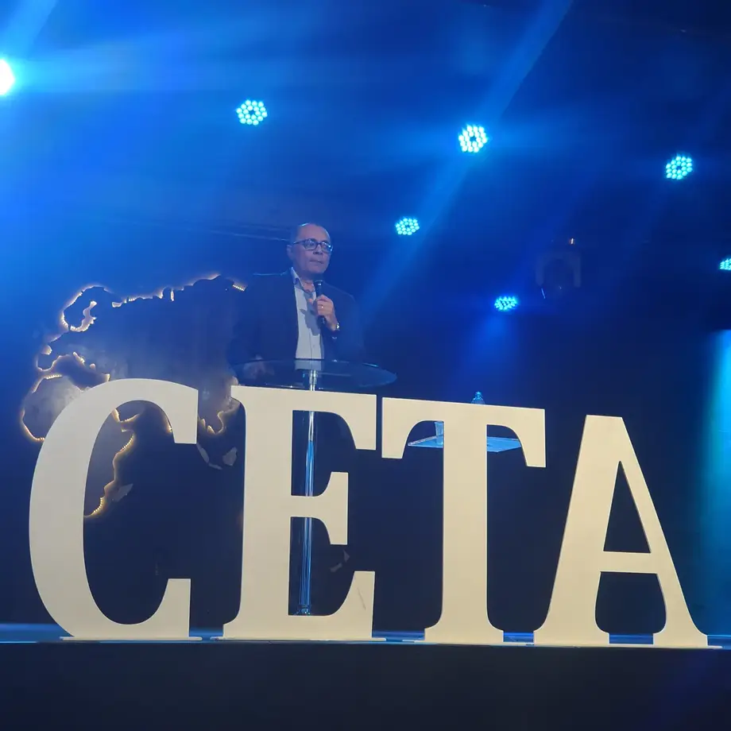
Quem somos
O CETA é o ministério de ensino da Igreja Batista Aliança Eterna. Aqui, quem decide investir em si encontra formação bíblica e teológica para manejar bem a palavra da verdade.
Procura apresentar-te a Deus aprovado, como obreiro que não tem de que se envergonhar, que maneja bem a palavra da verdade.
Formação

Para quem está disposto a aprender mais sobre Deus e sobre a nossa igreja. As turmas se formam em cerimônias de formatura.
Perguntar sobre as turmas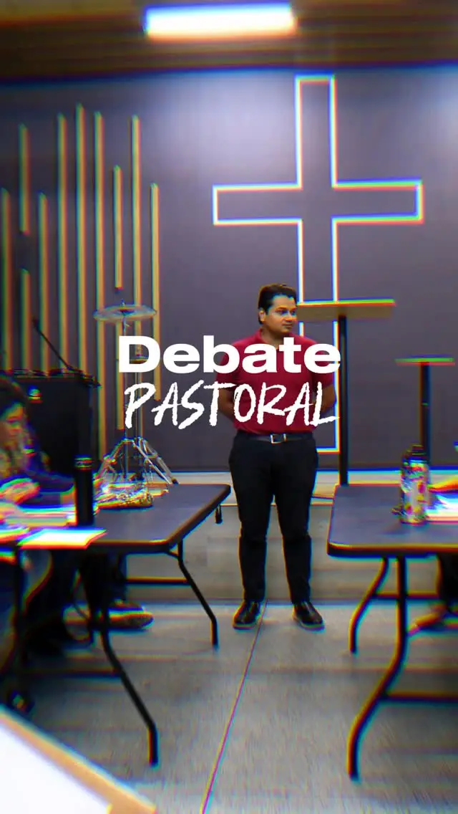
Formar pensadores, pastores e líderes que conhecem, questionam e discernem. Em um dos encontros, os alunos fizeram um debate sobre as teses de Calvino e Armínio.
Mais um caminho de estudo da Palavra dentro do CETA. Chame a equipe para saber das turmas e das datas.
Falar com a equipe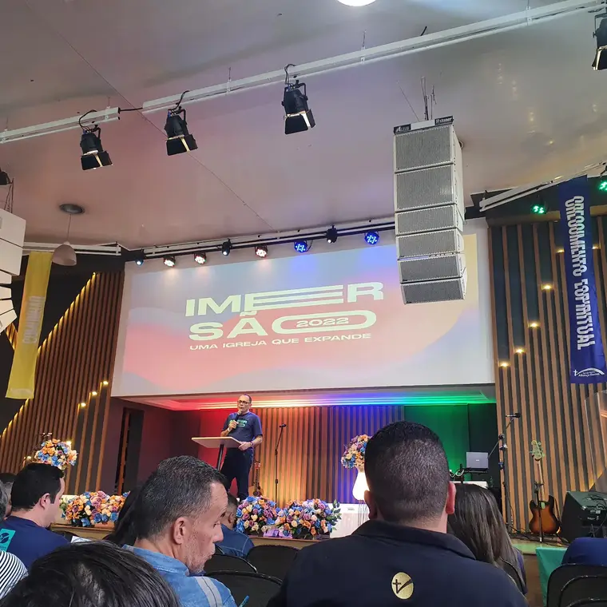
Um dos destaques do perfil do CETA. Chame a equipe para saber das próximas datas.
Conferência Connect Unânimes
Cinco ministérios. Uma missão. Um só Corpo. Na edição de 2025, a igreja viveu dois dias de Palavra, louvor, oficinas e labs sobre os cinco ministérios.
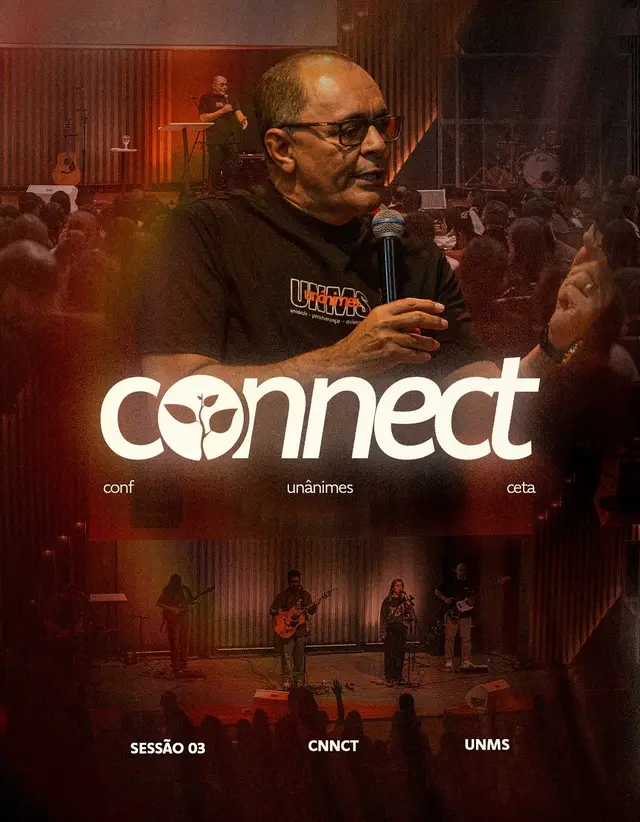
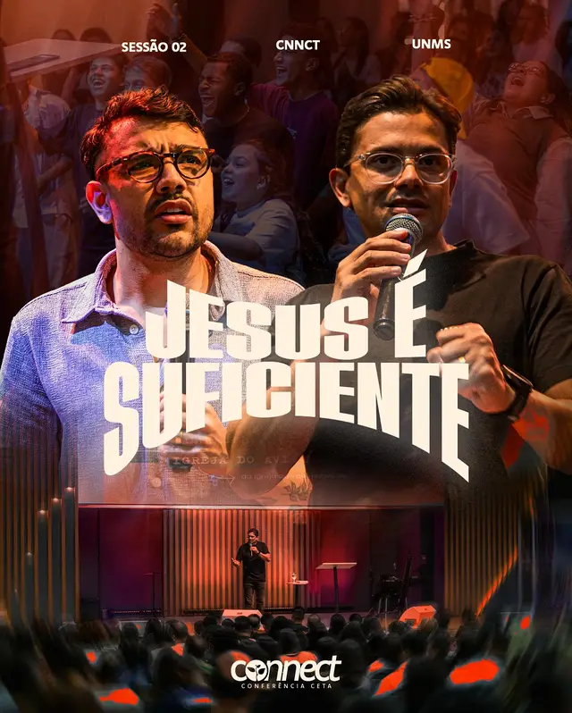
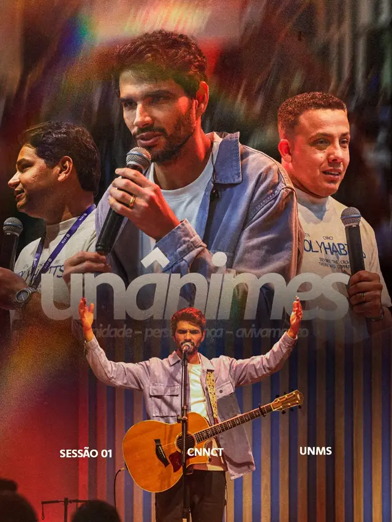
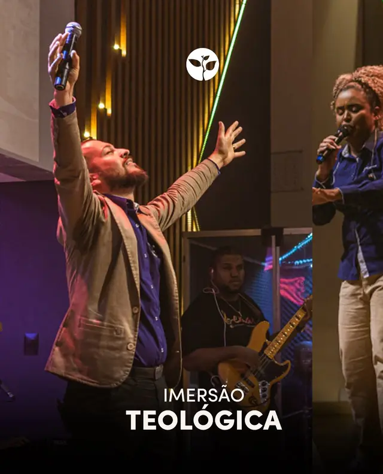
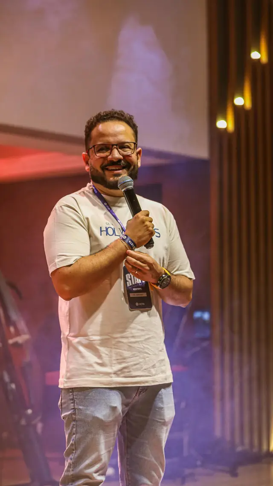
Formaturas
Celebração de crescimento, aprendizado e preparo para cumprir o chamado de Deus. O CETA forma e envia: é a história que o calendário abaixo conta.
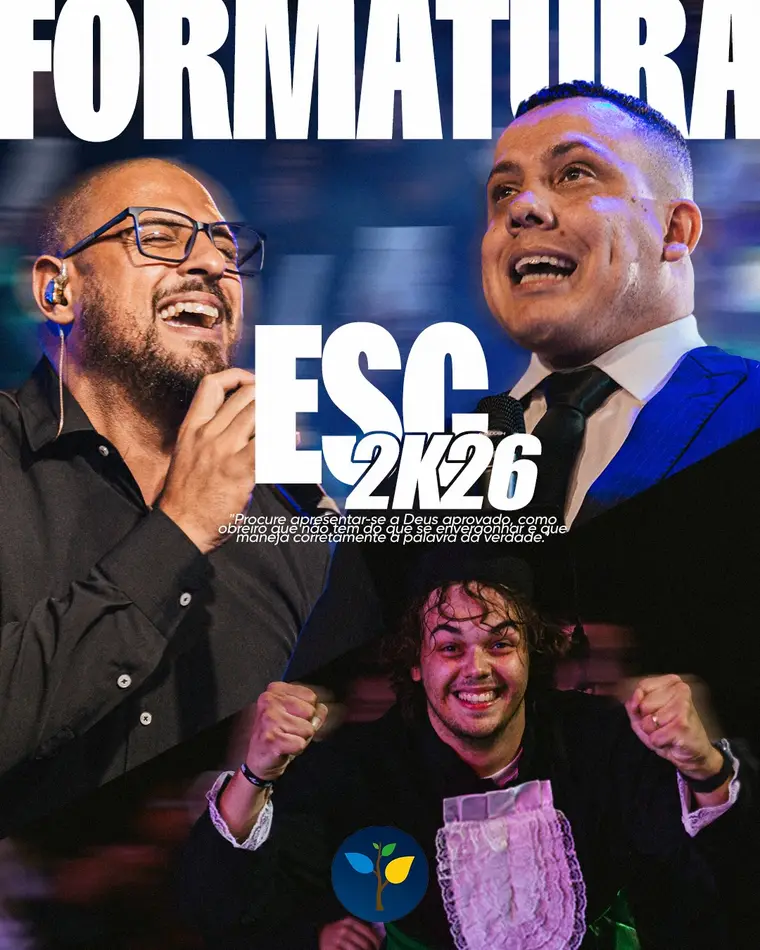
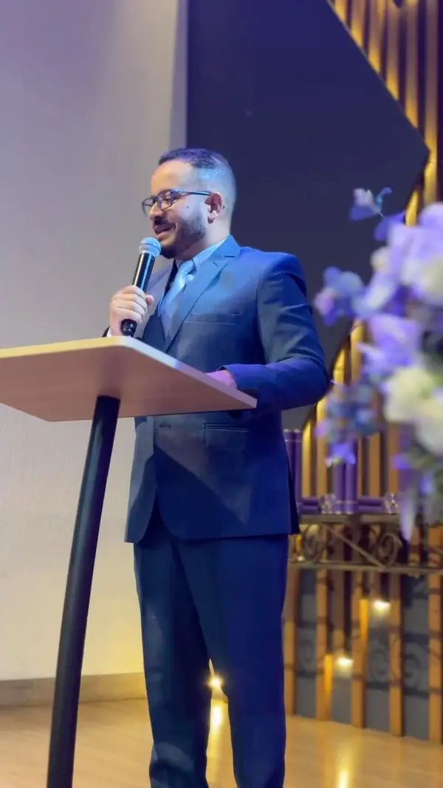
No dia a dia
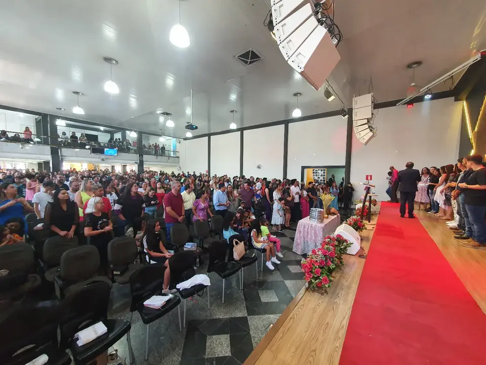
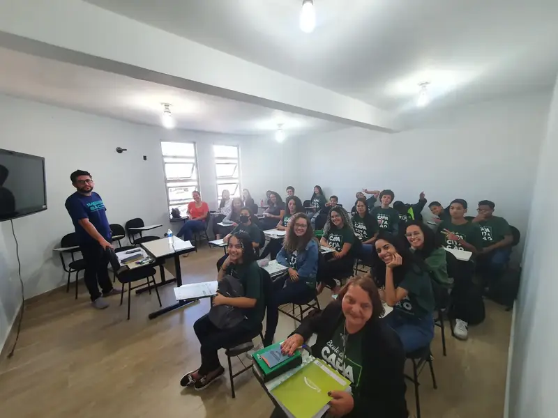
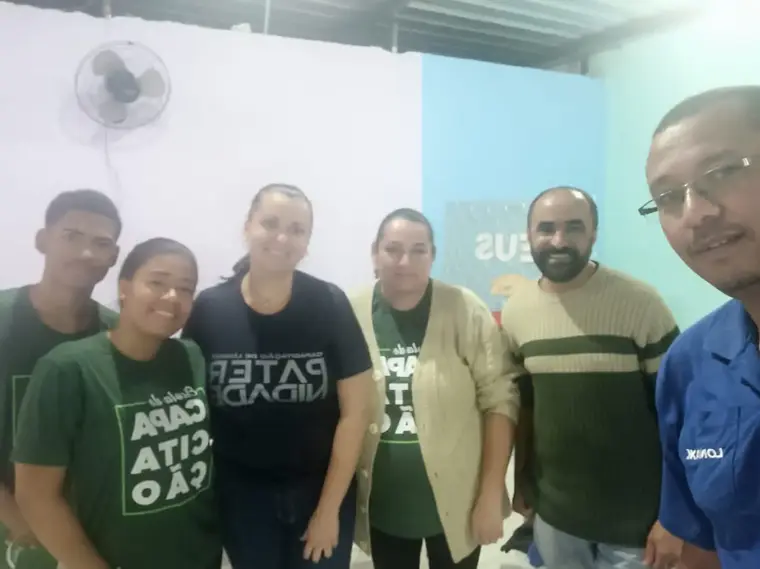
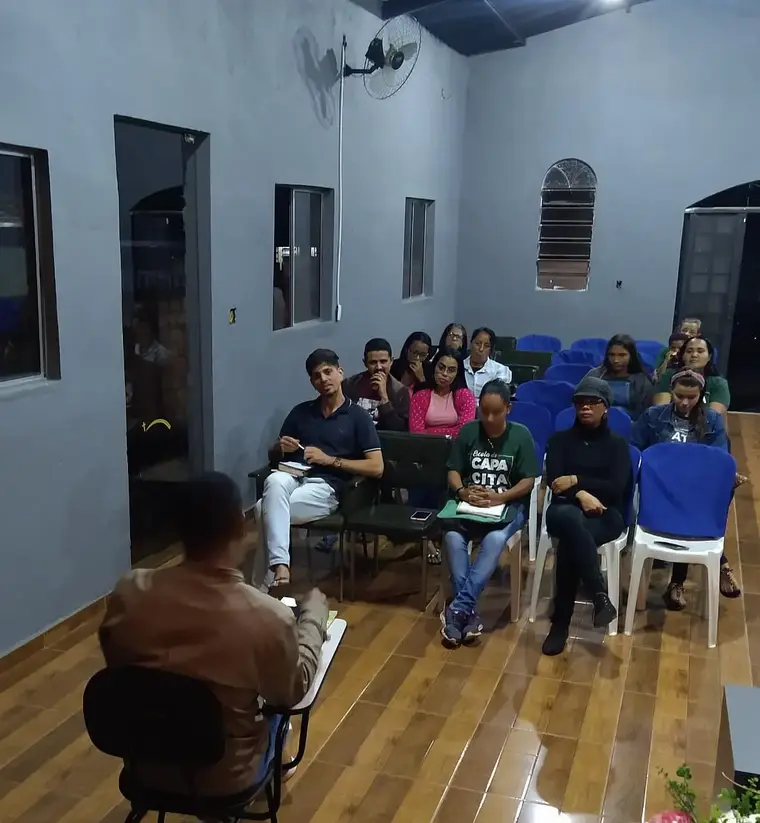
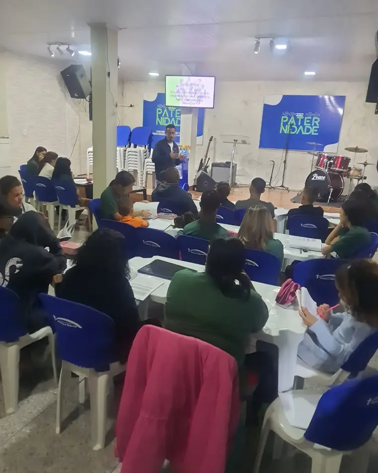
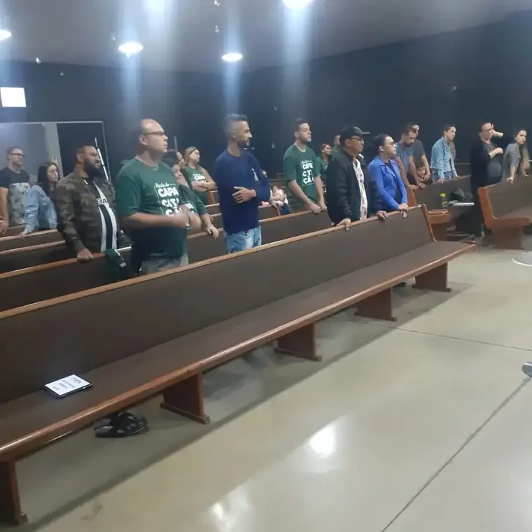
Fotos do Instagram @ensinoceta.
Onde estamos
Chame o CETA no Instagram e descubra qual formação é a certa para você.
Enviar mensagem para @ensinoceta